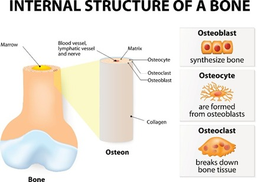

MAKALAH SISTEM RANGKA (SKELETAL)
Anatomi Fisiologi Tubuh Manusia
Dosen Pengampu: Dr. Dani Ramdani S.Pd., M.Pd.
Oleh: Dea Aprilia (NPM: 242154111007)
Program Studi Pendidikan Biologi
Fakultas Keguruan dan Ilmu Pendidikan
Universitas Siliwangi
Klasifikasi Sendi (Struktur)
Menurut Khadijah et al. (2020), sendi adalah tempat pertemuan dua atau lebih tulang. Berdasarkan strukturnya, sendi dibedakan menjadi 3 kelompok utama:
- Sendi Fibrosa / Sinartrosis (Tidak dapat digerakkan)
- Sendi Kartilago / Amfiartrosis (Gerak sangat terbatas)
- Sendi Sinovial / Diartrosis (Bebas digerakkan)
1. Sendi Fibrosa / Sinartrosis
Dijepit oleh jaringan ikat fibrosa padat tanpa rongga sendi. Pergerakan sangat terbatas atau tidak ada sama sekali.
- Sutura: Terdapat pada tengkorak (contoh: sutura koronal).
- Sindesmosis: Diikat jaringan fibrosa (contoh: tibiofibular distal).
- Gomphosis: Antara gigi dan alveoli gigi.

2. Sendi Kartilago / Amfiartrosis
Ujung tulang dilapisi tulang rawan hialin dan diperkuat ligamen. Ruang gerak sangat terbatas.
Terdapat 2 jenis utama:
- Sinkondrosis: Primary cartilaginous
- Simfisis: Secondary cartilaginous

Primary Cartilaginous (Sinkondrosis)
Tulang dihubungkan langsung oleh tulang rawan hialin tanpa rongga sendi.
- Sementara (Temporary): Zona pertumbuhan pada lempeng epifisis anak-anak yang menyatu saat dewasa.
- Permanen (Permanent): Bertahan seumur hidup, misal sendi antara iga pertama dan manubrium dada.

Secondary Cartilaginous (Simfisis)
Dipisahkan oleh bantalan fibrokartilago yang kuat dan fleksibel untuk meredam guncangan.
Contoh Utama:
- Simfisis pubis (tulang panggul)
- Diskus intervertebralis (antara ruas tulang belakang)

3. Sendi Sinovial / Diartrosis
Sendi paling kompleks dan aktif yang dapat digerakkan secara bebas.
- Memiliki cairan sinovial sebagai pelumas dan penyuplai nutrisi.
- Dilapisi tulang rawan artikular.
- Dikelilingi oleh kapsul sendi 2 lapis dan ligamen penguat.

Bentuk Sendi Sinovial
- Hinge Joint (Engsel): Siku, lutut
- Pivot Joint (Putar): Atlas & aksis leher
- Saddle Joint (Pelana): Pangkal ibu jari
- Condyloid Joint: Pergelangan tangan
- Ball and Socket (Peluru): Bahu, panggul
- Plane Joint (Geser): Pergelangan tangan

Gerakan Fleksi - Ekstensi
- Fleksi: Gerakan membengkokkan/melipat untuk mengurangi sudut sendi.
- Ekstensi: Gerakan meluruskan kembali sendi untuk memperbesar sudut persendian.
Dilakukan oleh sendi engsel (siku/lutut) dan sendi peluru (bahu/panggul).

Gerakan Abduksi - Adduksi
- Abduksi: Gerakan menjauhkan anggota gerak dari garis tengah tubuh.
- Adduksi: Gerakan mendekatkan kembali anggota gerak ke garis tengah tubuh.
Dilakukan oleh sendi peluru, pelana, dan kondiloid.

Gerakan Rotasi
Gerakan memutar tulang pada poros/sumbu panjangnya sendiri.
- Rotasi Medial: Memutar ke arah dalam.
- Rotasi Lateral: Memutar ke arah luar.
Dilakukan oleh sendi peluru (bahu/panggul) dan sendi putar (leher).

Kelainan Kurvatur Tulang Belakang
- Scoliosis: Deviasi/lengkungan ke samping (lateral).
- Kyphosis: Peningkatan lengkung toraks abnormal (bongkok).
- Lordosis: Peningkatan lengkung lumbal berlebihan.

Deformitas Ekstremitas Bawah
- Bowlegs / Genu Varum (Kaki O): Lutut saling berjauhan saat berdiri.
- Knock-knees / Genu Valgum (Kaki X): Lutut saling bersentuhan, pergelangan kaki terpisah.

Fraktur & Pola Patahan Tulang
Terputusnya kontinuitas jaringan tulang akibat gaya mekanis eksternal.
Jenis Pola Fraktur:
A. Transverse | B. Oblique | C. Butterfly
D. Segmental | E. Spiral | F. Comminuted

Spina Bifida
Malformasi kongenital akibat kegagalan penutupan tabung saraf (neural tube).
- Occulta: Celah kecil tanpa tonjolan kantung.
- Meningocele: Menonjolnya selaput pembungkus (meninges).
- Myelomeningocele: Kantung berisi jaringan saraf dan sumsum tulang belakang.

TERIMA KASIH
Ada Pertanyaan?